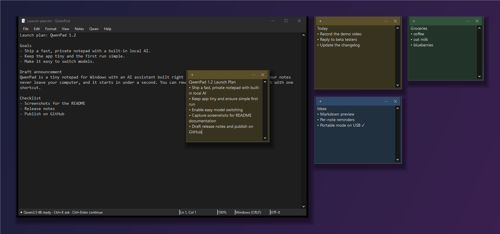
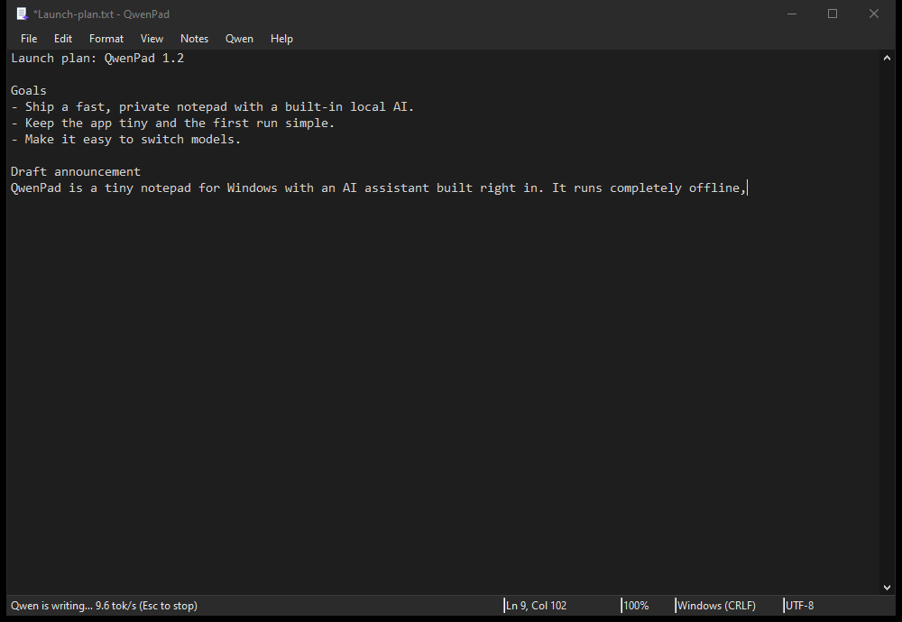
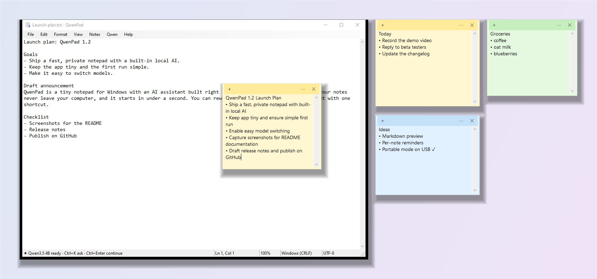

A tiny, private Notepad for Windows with a local AI writing assistant. Rewrite, fix, summarize and continue text with Qwen3.5, 100% offline.

A ~100 KB native app that opens in well under a second. No Electron, no installer, no account.
Qwen3.5 runs on your PC through llama.cpp. QwenPad only talks to 127.0.0.1, so your text never leaves the machine.
Rewrite, fix grammar, change tone, translate, summarize or continue with one shortcut. It streams live and undoes in one step.
Desktop notes in six colors, with the same AI built in. Saved as plain text files.
Follows Windows automatically, from the title bar and menus to the scrollbars and notes.
Unzip anywhere, even a USB stick. Settings, notes and models stay in one folder.

| Shortcut | What it does |
|---|---|
| Ctrl+K | Ask Qwen anything about the selection, or have it write at the cursor |
| Ctrl+Enter | Continue writing |
| Ctrl+Shift+I | Improve writing |
| Ctrl+Shift+G | Fix spelling & grammar |
| Esc | Stop generating |
| Model | Download | Best for |
|---|---|---|
| Qwen3.5 9B (recommended) | 5.3 GB | Best quality; ~8 GB free RAM |
| Qwen3.5 4B | 2.6 GB | Faster; low-RAM or CPU-only PCs |
| Qwen3.5 9B Abliterated | 5.2 GB | Community variant with refusal behavior removed |
| Any GGUF | Your choice | Drop a .gguf into models\ |

Yes. After a one-time model download, it runs Qwen3.5 locally through llama.cpp and only talks to 127.0.0.1.
No. A CUDA GPU makes it faster, but llama.cpp falls back to the CPU. Choose the 4B model on CPU-only PCs.
Yes, free and open source under the MIT license.
Yes. Put any chat-capable GGUF in models\, or point QwenPad at any OpenAI-compatible server (llama.cpp, LM Studio, Ollama) in Qwen > Settings.